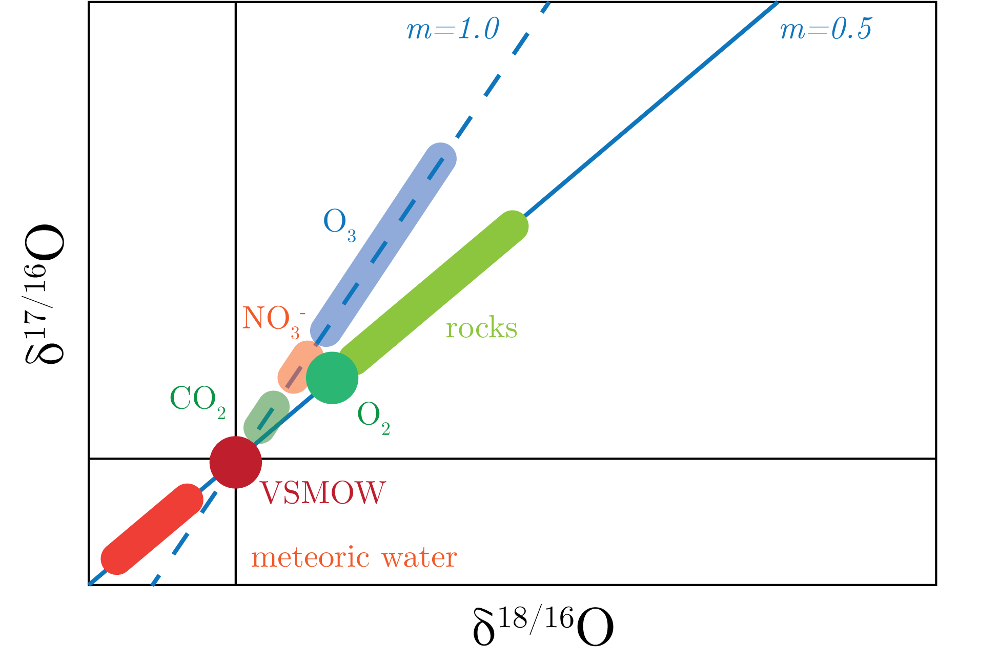
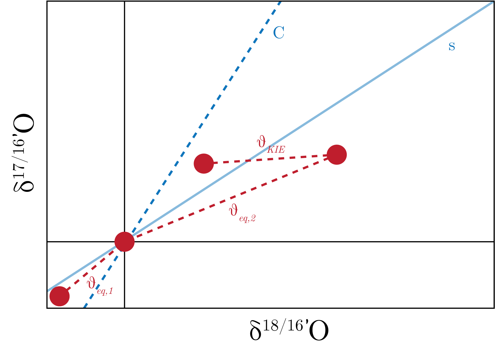
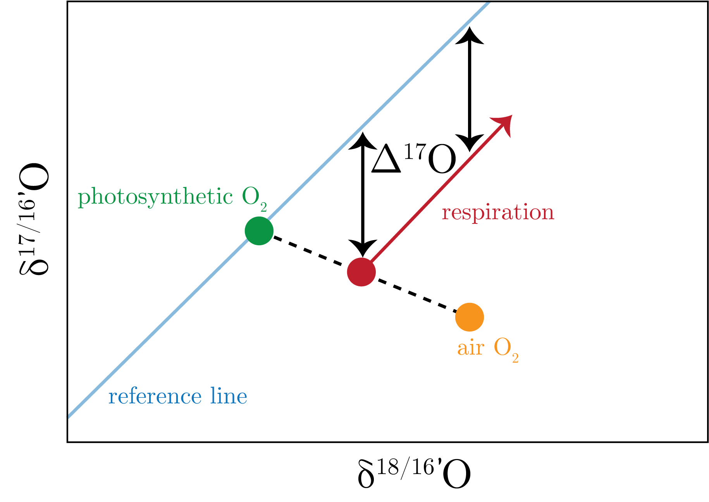

We can look $\delta^{18 / 16}$O to $\delta^{17 / 16}$O fractionation.
This is a mass dependent fractionation line has a slope given by 0.5, as would be expected given the differences in the masses of the two isotopes, which we call the terrestrial fractionation line.
Additionally, if we look at meteoric contributions, we note that they fall on a mass independent fractionation line, as does ozone, that is along a line that has a slope of 1.
We show this is Fig. 1.

Fig. 1: Terrestrial fractionation line.
This fractionation of ozone has to do with the symmetry of the molecule.
We can also see that this anomaly from ozone can be inherited by other species, such as NO$_3$ and $\text{CO}_2$.
Of importance here is how we define the deviations from this line, which we define as:
\begin{equation}
\Delta ^{17}\text{O} = \delta^{17}\text{O} - 0.52 \delta^{18}\text{O},
\end{equation}
where we have that the true value of the slope is given by $m=0.52$.
For all compounds that do inherit this signal, we get that their fractionation is kinetic, i.e. mass independent, and will thus fall along the 1:1 line initially.
However, if there is any change in this signal, it is going to change along the mass dependent fractionation line.
We define this effect as:
\begin{equation}
\epsilon_{KIE}^{17}\simeq 0.52 \epsilon_{KIE}^{18}.
\end{equation}
You can also conservatively mix between end members between these fractionations.
Current Definitions
We have a few definitions, which change the relation between these isotopes if you can measure small deviations:
where the prime in the fourth definition denotes:
\begin{equation}
^i\text{O}' = \log\left[\frac{^iR_{samp}}{^iR_{ref}}\right].
\end{equation}
The fourth definition is the most common and there are a few important things to consider when defining the $C$.
In addition to $\delta, \alpha, \epsilon$, we introduce $theta$ which is an intrinsic property of the process, that is for the equilibrium and kinetic effects: $\theta_{eq}$ and $\theta_{KIE}$.
We have $s$ the slope in the reference frame, which ranges from meteoric water which evaporates through Rayleigh distillation to form a slope of $s = 0.528$ or O$_2$ respiration in aquatic systems that produce a slope of $0.5179.$
Lastly, we have $c$, which is a coefficient and is basically an arbitrary number used to define a reference frame.
Oftentimes, we let $c=0.5305$, which is he thermodynamic maximum value.
We present a schematic of this in Fig. 2.

Fig. 2: Disentangling the definitions of $\theta, c$, and $s$.
We can imagine then $s$ the best fit line through the datapoints above, all of which are mass dependent fractionation.
Applications
We care about:
\begin{equation}
\text{ANCP } = \text{ GPP } - \text{ Resp}.
\end{equation}
Now, this is an underconstrained problem if we do not consider $^{17}$O, however, with this additional isotope we are able to constrain more systems, such as GPP.
We show this in Fig. 3.

Fig. 3: The use of triple oxygen isotopes to determine GPP.
What we note is that respiration does not affect the $\Delta^{17}$O, and therefore allow us to calculate the mixing ratios of the photosynthetic and atmospheric oxygen.
Polyatomic Isotope Ratios
Let's take $\text{CO}_2$. The, for $^iF$ the relative fraction of a different species $i \in \left[12, 13, 16, 17, 18\right]$.
The corresponding isotope ratios are, for the common species:
\begin{align}
^{44}F &= ^{12}F^{16}F^{16}F, \\
^{45}F &= ^{13}F^{16}F^{16}F + 2^{12}F^{16}F^{17}F,\\
^{46}F &= ^{12}F^{17}F^{17}F + 2^{12}F^{16}F^{18}F + 2^{13}F^{16}F^{17}F,
\end{align}
where we determine the "clumping" as the aggregation of isotope substitutions within the molecule beyond a random distribution.
We can then determine the following ratios:
\begin{align}
45 / 44 &:\: ^{45}R = ^{13}\text{R} + 2^{17}R, \\
46 / 44 &:\: ^{46}R = 2^{18}R + 2^{13}R^{17}R + \:^{17}R^2.
\end{align}
These are the ratios that our mass spectrometer measures.
We recall from our mass dependent fractionation discussion that:
\begin{equation}
^{17}R \simeq \:^{18}R^{0.52},
\end{equation}
which allows us to correct out the $^{17}$O contribution and just have the $\delta^{18}$O and $\delta^{13}$C.
An example: carbonates
As background, we note that there is a linear relationship between $K_{eq}$ for the carbonate-water system and $T$, namely the $\epsilon = \delta_c - \delta_w$ of $\delta^{18}O$.
The new frontier is in the 47-clumped isotopes, for which new resolving power has allowed us to measure these data.
Historically, there might not have been any value to measuring the abundance of this isotope, as we already know how much of the 16, 17, and 18 is in this molecule from other clumped isotope.
But we note that the distribution of the 47-clumped isotope is powerful because it allows us to go further with the carbonate paleothermometer discussed previously, in so far as we no longer have to assume that we know the $\delta_w$ in the paleorecord.
We know that the $\delta^{18}$O also changes as a function of ice, via Rayleigh distillation.
Now, to get at this, we define:
\begin{equation}
\Delta_{47} = \left[\left( \frac{\{47 / 44\}_{sample}}{\{47 / 44 \}_{random} } \right) - 1\right] \times 10^3.
\end{equation}
From our $\delta^{13}$C and $\delta^{18}$O measurements, we should be able to get at the relative speciation of the isotopes from our fractional abundances defined above (for that random distribution).
Research has shown that at higher temperature, there is a higher degree of clumping, with a linear relationship to $T^{-2}$.
Why is this the case?
Clumping
Let's take the H$_2$ and D$_2$ example, namely:
\begin{equation}
2\text{HD} \leftrightharpoons \text{H}_2 + \text{D}_2.
\end{equation}
We note that this is a Binomial distribution, so that we are dealing with the distribution function:
\begin{equation}
1 = \left[\text{H}\right]^2 + 2\left[\text{H}\right]\left[\text{D}\right] + \left[\text{D}\right]^{2}.
\end{equation}
We then can define the equilibrium constant:
\begin{equation}
K_{eq} = \frac{\left[\text{H}_2\right]\left[\text{D}_2\right]}{2\left[\text{HD}\right]},
\end{equation}
and we note that our rearrangement of the PDF for our binomial distribution is given as:
\begin{equation}
\frac{\left[\text{H}\right]^{2}\left[\text{D}\right]^{2}}{\left( 2\left[\text{H}\right]\left[\text{D}\right] \right)^2 }.
\end{equation}
Therefore, we can equate these and get that $K_{eq} = 0.25$ for the random binomial distribution.
However, we note that this is the theoretical minimum, which is approaches as $T\to \infty$.
The system will favour clumping when the energy difference between the HD and H$_2$ is smaller than HD and D$_2$, as the net effect of not clumping will increase the dissociation energy.
An example: methane
Of interest is the 18-clumped isotopes for methane, which are $^{13}$CH$_3$D and $^{12}$CH$_2$$D$_2, that gives a temperature relationship.
The definitions are the same as above.
It has recently allowed us to tease apart the KIE from microbial activity.